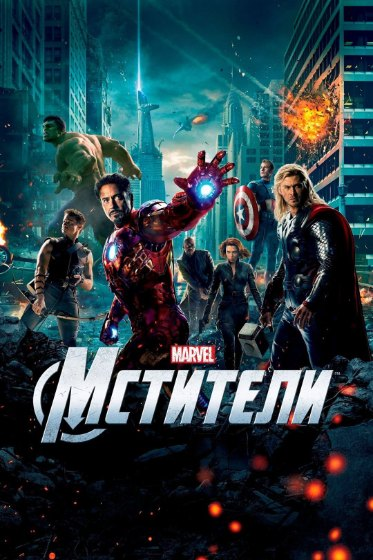

Почему армия Земли не пришла на помощь Мстителям?
В Нью-Йорке полицейские ждали Национальную гвардию. Совет мировой безопасности запустил ядерную ракету. Позже Щ.И.Т. эвакуировал жителей Заковии. Почему же в решающей схватке с Таносом мы почти не увидели регулярные вооружённые силы?
В 2012-м полиция Нью-Йорка спрашивала, знает ли армия об инопланетном вторжении. Совет мировой безопасности уже принимал решение о ядерном ударе. Позднее человечество пережило Заковию, «Озарение», Заковианский договор и нападение армии Таноса на Ваканду. Но в финальной битве 2023 года регулярные земные войска почти исчезли из кадра. Почему?
Вопрос: почему за Землю сражались почти только супергерои?
«Мстители: Финал» подаёт финальную битву как столкновение за судьбу всей Вселенной. Через порталы выходят герои, воины Ваканды, асгардцы, маги и союзники из космоса. Но обычных военных подразделений Земли — танковых колонн, армейской авиации и пехоты крупных государств — мы практически не видим.
И это особенно странно, если вспомнить предыдущие вторжения. Люди уже переживали нападение читаури, катастрофу в Заковии, появление Альтрона и атаку сил Таноса в Ваканде. Земля знала, что опасность существует.
Речь не о том, что американский танк обязательно победил бы Таноса. Речь о реакции человечества. Почему в решающей битве за планету нет хотя бы одной короткой сцены, показывающей, что обычные люди тоже пришли защищать свой мир?
Нью-Йорк, 2012: армия не успела, но власти отреагировали
Первая битва за Нью-Йорк хорошо показывает разницу между отсутствием армии в кадре и отсутствием государственной реакции вообще.
Пока из портала Локи прибывают читаури, нью-йоркские полицейские эвакуируют гражданских. Капитан Америка лично отдаёт полиции указания, какие улицы перекрыть и как вывести людей из зоны боя. Это не вооружённая армия, но уже организованное участие земных служб.
Реальный диалог из «Мстителей» (2012)“Does the army know what's happening here?”
“Do we?”
Разговор полицейских во время вторжения в Нью-Йорк.
В той же сцене молодой сотрудник объясняет, что Национальную гвардию можно будет развернуть примерно через час. У нападения просто не было нормальной фазы подготовки: портал уже открыт, кварталы атакованы, а военные части ещё не успели прибыть.
Однако параллельно Совет мировой безопасности принимает решение о ядерном ударе по Нью-Йорку. Ник Фьюри пытается его остановить, но ракета всё же запускается; Тони Старк перехватывает её и перенаправляет через портал.
Таким образом, говорить «государства вообще ничего не предпринимали» неверно. Были и полицейские, и политический приказ, и вооружённое вмешательство — пусть в случае с ракетой катастрофически опасное.
Сверка сцены с полицейскими: диалог и время в фильме.

Заковия, 2015: спасательная операция всё-таки состоялась
В «Эре Альтрона» конфликт становится ещё масштабнее: Альтрон поднимает город в воздух и собирается обрушить его на Землю. Здесь Мстители не только отбиваются от роботов — они должны успеть спасти мирных жителей.
Ник Фьюри прибывает на хеликэрриере, а команда помогает эвакуировать людей. Клинт, Наташа, Стив и другие Мстители организуют спасение, пока город продолжает подниматься. Масштабная государственная армейская операция по уничтожению дронов в фильме не показана, но организованная поддержка явно существует.
Это важная граница: хеликэрриер с людьми Фьюри нельзя безоговорочно объявлять «армией США», но нельзя и говорить, что герои были полностью одни.
Даже само появление Альтрона указывает на проблему: человечество пыталось автоматизировать оборону Земли, но такой проект, созданный Тони и Брюсом, вышел из-под контроля. Угроза оказалась связана с собственными защитными разработками.
После Заковии мир получает ещё одну причину серьёзно заняться координацией обычных военных и супергероев, но фильм не показывает, как именно эта проблема решалась на практике.
Щ.И.Т., М.Е.Ч. и «Озарение»: Земля готовилась к угрозам
Возражение, что никто на Земле не готовился к инопланетному вторжению, не выдерживает проверки фильмами.
Щ.И.Т. годами изучал необычные технологии, организовывал операции, содержал хеликэрриеры и собирал Мстителей. В «Другой войне» выясняется, что проект «Озарение» предполагал три вооружённых хеликэрриера, способных выявлять и уничтожать множество целей превентивно. Под контролем «Гидры» это превращалось в инструмент массовых убийств.
М.Е.Ч. занимался космическими и высокотехнологичными программами, что особенно заметно в «Ванда/Вижн». Позднее «Капитан Марвел 2» показывает и отдельную космическую инфраструктуру, связанную с Ником Фьюри. Это разные структуры, но обе подтверждают: мир пытался работать с внеземными угрозами. Но их полномочия и готовность развернуть армию в конкретной битве нам не раскрывают.
Департамент ликвидации разрушений и другие структуры также отражают реакцию властей на последствия появления супергероев и пришельцев. Однако восстановление города после атаки и отражение нового вторжения — разные задачи.
Поэтому правильный вывод двойной: система безопасности Земли развивалась, но оставалась раздробленной, а отдельные проекты были скомпрометированы. Из самого факта существования Щ.И.Т. и М.Е.Ч. не следует, что в 2023 году имелась готовая единая земная армия против космических угроз.
Заковианский договор: контроль вместо общей обороны?
После катастрофы в Заковии международное сообщество обсуждает не только защиту людей, но и ответственность Мстителей. В «Противостоянии» Заковианский договор предлагает передать решение об операциях супергероев международному надзору.
Но фильм сосредоточен на споре о том, кто отдаёт приказ Мстителям, а не на создании общей системы отражения будущих вторжений. В результате сама команда раскалывается.
Это потенциально важнее числа танков. Если герои, спецслужбы, армии и космические организации не доверяют друг другу, даже огромные ресурсы могут оказаться не готовы к внезапной атаке.
Впрочем, мы не знаем, какие планы обороны государства разработали за кадром в период между фильмами. Нельзя утверждать, что договор полностью остановил военную подготовку или что никакой общей стратегии не было. Это логичная критика показанной политической стороны КВМ, а не установленный документами мира факт.
Почему в Ваканде сражались местные воины, а не земные армии?
В «Войне бесконечности» ситуация повторяется в другом масштабе. Танос посылает армию аутрайдеров, а Мстители решают защищать Вижна в Ваканде. Вакандская армия действительно выходит на поле боя: здесь участвуют не только супергерои, но и подготовленные солдаты суверенного государства.
Отсутствие контингентов других стран можно объяснить секретностью операции, быстротой развития событий и тем, что защита Камня Разума организована в месте, обладающем мощными технологиями и защитным куполом. Но ни одна из этих причин не названа единственной официальной.
Есть важная особенность: если фильм показывает воинов Ваканды с копьями и энергетическими щитами, это вовсе не означает, что они бесполезны против пришельцев. Их оружие и подготовка не равны земному вооружению начала XXI века.
Тем не менее было бы интересно увидеть, как другие державы после нападения на Нью-Йорк и Заковию реагируют на открытое космическое вторжение. КВМ этого почти не исследует.
Финал, 2023: почему армия действительно могла не успеть
Теперь к главному событию. Сразу после возвращения исчезнувших Танос атакует базу Мстителей с гигантского корабля. Для наземных военных подразделений это внезапная операция: им неизвестны точка удара, состав противника и даже точное время нападения.
В ту же минуту на Землю возвращаются миллиарды людей, исчезнувших пять лет назад. Мир переживает новый кризис координации, медицины и транспорта. В этих условиях рассчитывать на моментальное прибытие национальных армий к одной базе трудно.
Маги открывают порталы, и в битву входят силы Ваканды, Асгарда, волшебники и космические союзники. Порталы делают такое подкрепление возможным без многодневной перевозки войск.
Но здесь появляется естественный вопрос: если можно мгновенно перебросить бойцов из Ваканды и космоса, почему не показать хотя бы небольшой земной военный контингент?
Фильм не говорит, что порталами невозможно перенести земную технику или солдат. Но также не показывает, что кто-то из организаторов битвы вообще мог за столь короткое время согласовать переброску регулярной армии.
Ещё один нюанс: на поле боя уже есть обычные люди — солдаты Ваканды, асгардцы и другие союзники. Отсутствуют прежде всего регулярные военные силы крупнейших земных государств, а не все люди без сверхспособностей.
А помогли бы танки, авиация и артиллерия против Таноса?
Двусторонний клинок Таноса разрушает щит Стива, а корабль «Святилище II» обладает огромной огневой мощью. Очевидно, обычный танк в одиночку не решил бы судьбу схватки. Но стратегическая роль армии не сводится к дуэли с Таносом.
Солдаты могли бы обеспечивать эвакуацию, охранять периметр, удерживать позиции от многочисленных аутрайдеров, доставлять раненых, прикрывать воздушное пространство и связывать боевые группы. Даже если тяжёлое оружие плохо действует против самого Таноса, оно могло бы быть полезно против его рядовых войск и некоторых машин.
И наоборот: нельзя утверждать, что современная ракета непременно пробила бы броню корабля Таноса. Сопоставимых испытаний в фильмах нет. Для многих инопланетных целей мы просто не знаем точной стойкости к земному оружию.
Речь о том, что организованная человеческая армия расширила бы варианты действий Мстителей и придала бы конфликту ощущение глобального сопротивления, а не о гарантированной победе «десятка танков».
Как показать участие людей всего за тридцать секунд?
Для этого не нужно переписывать трёхчасовой «Финал». Достаточно короткой монтажной вставки между появлением порталов и общим наступлением.
Первый кадр. На экранах военного командного центра — сообщения о внезапном ударе по базе Мстителей. Офицер отдаёт приказ поднять ближайшие подразделения. Зритель понимает: Земля не осталась безразличной.
Второй кадр. Через портал проходят несколько бойцов земной армии и бронемашины. Рядом уже стоят вакандцы. На секунду в одном строю оказываются люди из разных стран и фантастические герои.
Третий кадр. Артиллерия или авиация прикрывает отступающих раненых, пока Доктор Стрэндж и другие маги держат портал. Не нужно показывать, как обычные военные побеждают Таноса; достаточно показать, что они спасают людей и сдерживают армию.
Это наше сценарное предложение, не вырезанная сцена и не подтверждённый замысел авторов. Но оно усилило бы одну из главных идей фильма: за судьбу Вселенной сражаются не только избранные, но и обычные люди.
Вывод: отсутствие в кадре не доказывает бездействие
В «Мстителях» 2012 года объяснена задержка Национальной гвардии, но полиция и Совет мировой безопасности всё же действуют. В «Эре Альтрона» Фьюри участвует в эвакуации жителей. В «Войне бесконечности» сражается полноценная армия Ваканды. А в «Финале» магические порталы приводят огромные союзные силы почти мгновенно.
При этом даже спустя годы после первого вторжения Земля не демонстрирует в кадре единую подготовленную военную реакцию на нашествие Таноса. Киновселенная показывает угрозы и сверхлюдей гораздо подробнее, чем работу государств по защите обычных граждан.
С точки зрения драматургии решение понятно: финальная битва принадлежит героям Саги Бесконечности. Если уделить слишком много времени танкам и военным штабам, можно отвлечь внимание от личных историй Стива, Тони и Тора.
Но для ощущения настоящей битвы за Землю не хватило буквально нескольких кадров. Фильм не доказывает, что человечество ничего не делало. Он просто не показал его организованное сопротивление на том уровне, которого заслуживал масштаб угрозы. И это заметная упущенная возможность — особенно после семи лет истории о том, как Земля училась жить в мире пришельцев и супергероев.
На чём основан разбор
«Мстители» (2012): полиция, Национальная гвардия, решение Совета мировой безопасности; «Первый мститель: Другая война» (2014): проект «Озарение»; «Мстители: Эра Альтрона» (2015): спасательная операция в Заковии; «Первый мститель: Противостояние» (2016): Заковианский договор; «Мстители: Война бесконечности» (2018): битва за Ваканду; «Мстители: Финал» (2019): внезапная атака и подкрепление через порталы.
Прямую реплику полицейских можно сверить по сцене. Идея о коротком появлении земных военных в финале — редакционное предложение, а не утверждение о фактах фильма.